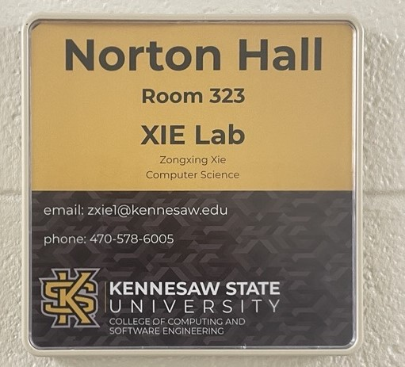
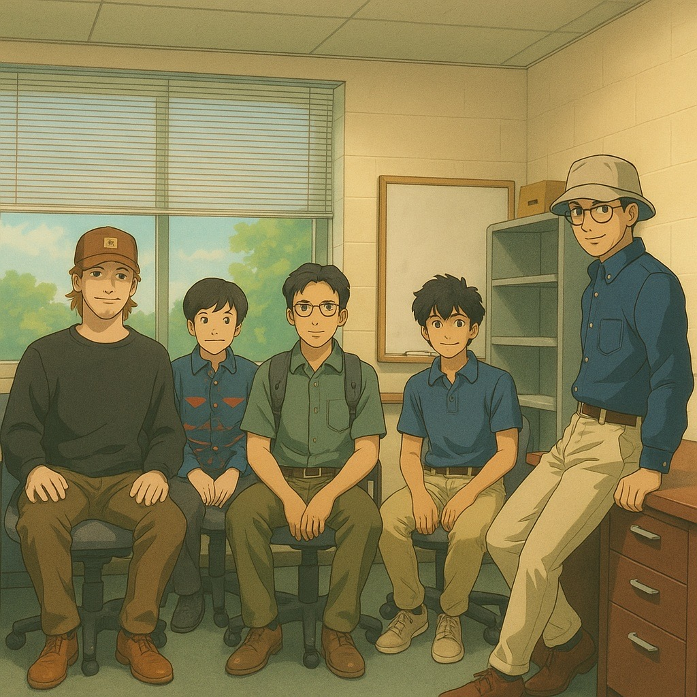

ResearchXIE Lab @ R2-323 Research InterestsOur vision is to transform daily living environments into smarter, healthier, and more connected spaces. We aim to develop and advance ubiquitous sensing and computing technologies that seamlessly integrate into everyday life, creating environments that not only monitor but actively enhance well-being. Our research focuses on smart and connected health, leveraging ubiquitous and mobile computing to create innovative, non-intrusive sensing systems for continuous health monitoring. By advancing wireless and multimodal sensing technologies, we seek to improve the detection and analysis of critical health indicators such as vital signs, indoor trajectories, and daily activities. We strive to contribute to a future where smart sensing and computing empowers individuals to live healthier, more independent lives, while also enabling healthcare providers to deliver proactive, personalized, precision care. Specifically, we are interested in the following topics:
Ongoing Projects
Honors and Awards
|